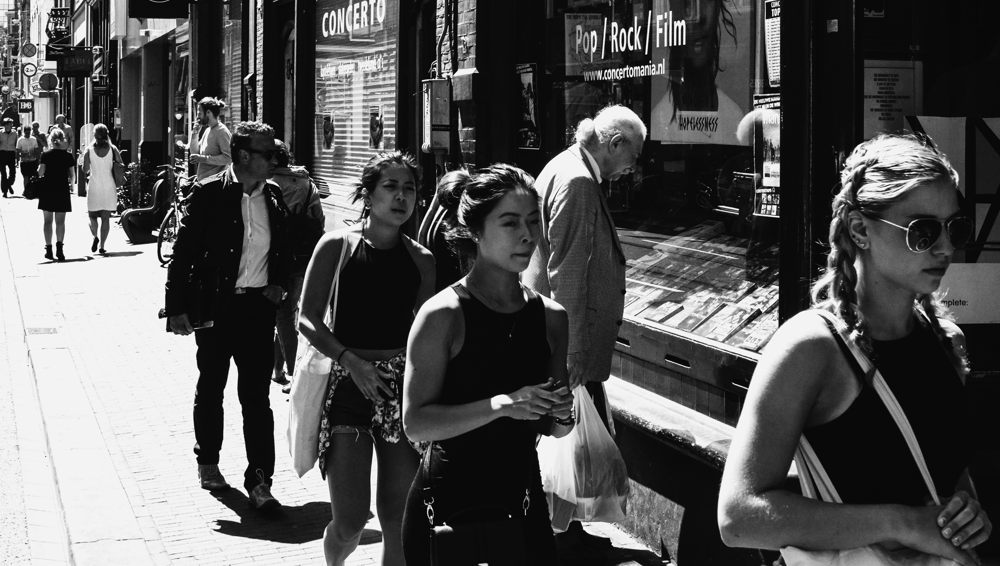

Ever wondered how The Netherlands came to be? Or about who have been ruling this wonderful country and who are ruling it today? Or have you ever wondered about what the politics are being like in this small country?
Ever wondered how The Netherlands came to be? Or about who have been ruling this wonderful country and who are ruling it today? Or have you ever wondered about what the politics are being like in this small country?
What might The Netherlands' relationship with water be? And what are the Dutch provinces? How does the climate there look like?
 How did Dutch society come to be? On this page there will be a description of the multicultural picture of The Netherlands.
Do you want to know some typical Dutch dishes? Then you're at the right place here!
There are lots of things to say about the Dutch newspapers, magazines, television and radio. How are they different from those from other countries?
What's going on with religion in The Netherlands? How is religion divided over the country?
On this page, bank holidays will be discussed and how they work in the Netherlands. Which holidays are similiar to the ones in your country? and which ones are different from those in your country?
Visit this page if you wish to know more about all of the other special days in The Netherlands.